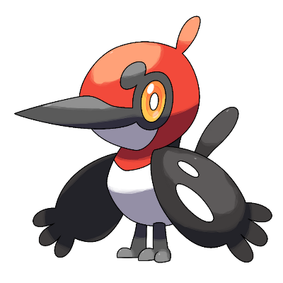
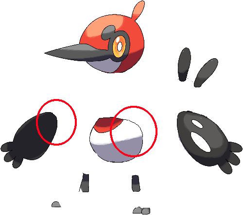
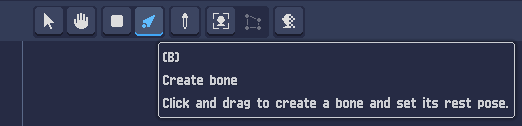
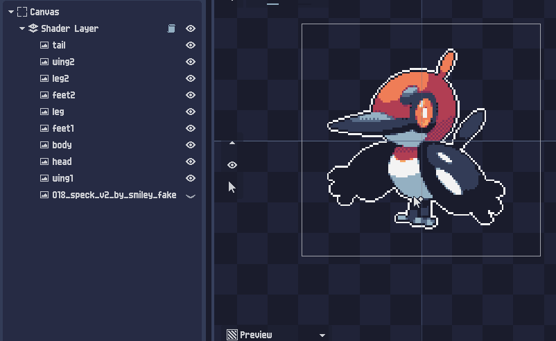
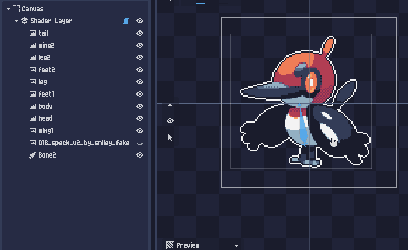
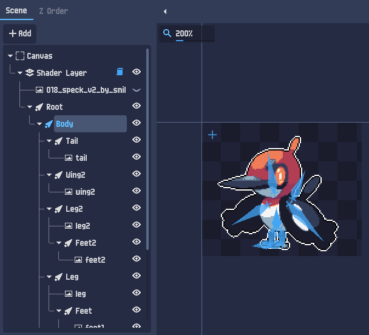
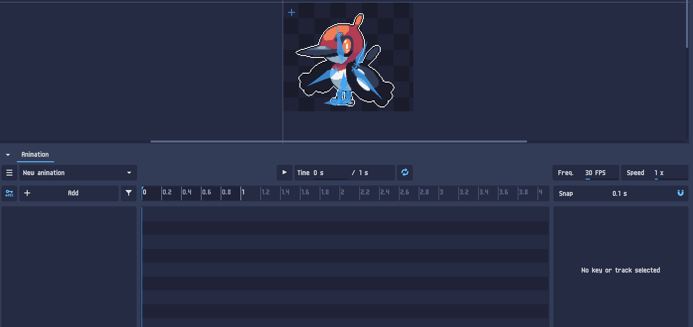
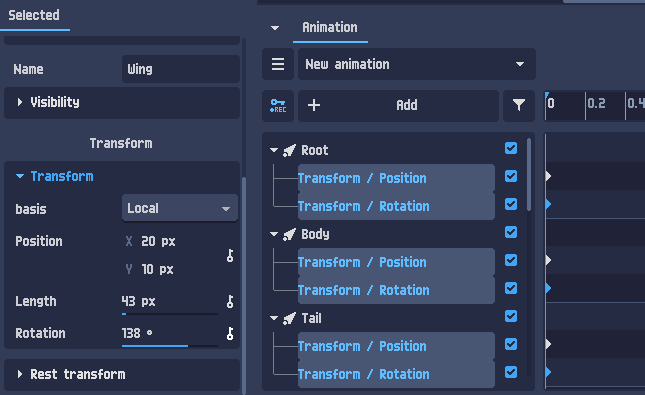
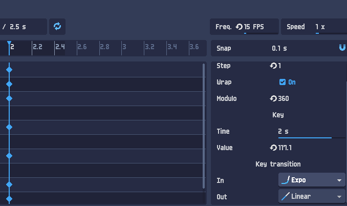
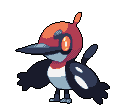

2D csont-animáció — rigeld meg, pózold, animáld
A csont-animáció (bones / skeletal animation) lényege: a karaktert darabokra bontod, a darabokat egy csontvázra akasztod, majd nem a pixeleket rajzolod újra frame-enként, hanem a csontokat forgatod — és kulcskockákkal (keyframe) rögzíted a pózokat. A PixelOver a köztük lévő átmenetet kiszámolja. Ebben a leckében a szétdarabolástól a kész, exportált animációig jutunk — élő, procedurális demókkal.
Darabold szét a rajzot
A csont-animáció előfeltétele, hogy a karakter külön, mozgatható darabokból álljon: fej, törzs, szárnyak, lábak, farok. Egyetlen összeolvasztott képet nem lehet riggelni — előbb szét kell szedni a részeket (külön rétegekre/fájlokba). A példánk a Speck nevű madár-karakter (Smiley-Fakemon rajza).


Végül exportáld minden darabot külön képként (a teljes eredetit is tartsd meg referenciának). A szétbontásról bővebben a „Splitting drawings into objects” (Drawing) lecke szól.
Import, méret, shader
- Importáld a darabokat a PixelOverbe (drag & drop) — külön képekként (ne animációként). A teljes eredetit hozd be referencia-képnek, hogy lásd, hova kerül minden.
- Méretezés (ajánlott): jelöld ki az összes darabot (Shift + kattintás), és méretezd őket együtt a kívánt pixel-art felbontásra.
- Tegyél rá pixel-art shadert — tölts be egy presetet, vagy hangold a jobb panelen (lásd a Szín-indexelés és Dithering leckéket).
A csontváz — Bone tool és hierarchia
A rig a csontok hierarchiája. A kulcsfogalom a szülő–gyerek (parent–child) kapcsolat: ha egy csontot elforgatsz, az összes alatta lévő (gyerek) csont vele mozdul. Így egyetlen „törzs”-csont forgatása az egész madarat megdönti, miközben egy „szárny”-csont csak a szárnyat mozgatja. Ez a forward kinematics.
A csontokat a Bone tool-lal rajzolod a vászonra (kattints + húzd):


Építsd fel a hierarchiát egy Root (gyökér) csonttal a tetején — ez lehet 0 px hosszú, csak referenciapont. Alá kerül a Body (törzs), és az alá a többi:
Root (0 px, referenciapont — az egész karaktert mozgatja) └ Body (törzs — ezt döntve az egész madár dől) ├ Head (fej + csőr) ├ Wing (bal szárny) ├ Wing2 (jobb szárny) ├ Tail (farok) ├ Leg ─ Feet (comb → lábfej) └ Leg2 ─ Feet2 (comb → lábfej)
Végül akaszd a képeket a csontokra: a Scene fában húzd (drag & drop) minden darabot a megfelelő csont alá. A konvenció: a csont nagybetűs (Body), a hozzá tartozó kép kisbetűs (body).


Forgasd a csontokat! A Body az egész madarat dönti (minden a gyereke); a szárny csak önmagát.
Animation panel & kulcskockák
Az animáció az alsó Animation panelen készül. Itt állítod be az animáció hosszát (Duration), a képkockasebességet (Freq. — FPS) és a lejátszási sebességet; innen indítod a ▶ Play-t.

Freq. 30 FPS, Speed 1×, a REC gomb (bal alsó kulcs-ikon), + Add (sáv), Snap.Az első kulcskockák
A kulcskocka (key) egy időpillanatban rögzíti egy csont állapotát. Minden csontnak két fő animálható sávja van: Transform / Position és Transform / Rotation. Jelöld ki az összes csontot a 0. időpillanatban, és tegyél rájuk egy Position és egy Rotation kulcsot — ez a kiinduló (nyugalmi) póz.

Transform / Position és egy Transform / Rotation sáv. Balra a kijelölt csont (Wing) Transform-ja: Position, Length, Rotation 138°.Kapcsold be a REC gombot: ezután minden csont-módosításod automatikusan kulccsá válik az aktuális időpillanatban. Csak állítsd a pózt, és a kulcsok maguktól keletkeznek. (Kézzel a kulcs-ikonokkal is rakhatsz/törölhetsz.)
Pózok és átmenetek
Az animáció pózok sorozata az időtengelyen. A munkamenet:
- Új póz: told az idővonal-kurzort előrébb (pl. 0,3 mp), és állítsd be a következő pózt (a csontok forgatásával). A köztes képkockákat a PixelOver interpolálja.
- Kulcsok másolása: ismétlődő mozgásnál (pl. vissza a kiinduló pózba) jelöld ki és másold a kulcsokat a kurzor helyére — gyorsít.
- Vissza nyugalmi pózba (Reset to rest pose): bármikor visszaállíthatod a csontokat az alaphelyzetbe.
A jó animáció titka a túlzás és az ellenmozgás: egy ugrásnál előbb leguggol (összenyomódik), aztán rugózik fel, és landoláskor megint összenyomódik. Ezek az „anticipáció” és „follow-through” pózok keltik életre a mozgást.
Átmenetek finomítása — easing
A kulcsok közti átmenet alapból egyenletes lehet, de minden kulcshoz adható easing (lágyítás): a Key transition In és Out görbéje (pl. Linear, Expo). Ettől lesz a mozgás rugalmas, élő — nem robotos.

Time 2s, Value 117.1, és a Key transition — In: Expo, Out: Linear. A Modulo 360 a forgásnál zárja körbe a fokot.Három póz az idővonalon: nyugalom → guggolás → levegő. A köztes képeket a rendszer számolja. Húzd a kurzort, vagy játszd le!
Kapcsold „Lineáris”-ra → gépies. „Lágyított” → rugózó, élő mozgás.
Export & összefoglaló
Ha kész az animáció, exportáld:
- Ellenőrizd az FPS-t az Animation panelen.
- Rejtsd el a csontokat a jobb felső kapcsolóval (hogy ne látszódjanak az exportban).
- Project ▸ Export… — formátum: PNG-szekvencia, GIF vagy spritesheet. Itt állíthatsz pixel-méret átskálázást, mappákba bontást, és látod a képkockaszámot.

Összefoglaló
- Darabold szét a rajzot részekre, és töltsd ki a takart területeket.
- Importáld külön képekként (+ referencia), méretezd, tegyél rá shadert.
- Riggelés: a Bone tool-lal csontváz (Root → Body → fej/szárnyak/lábak/farok), a képeket a csontok alá.
- Kulcskockák: minden csont Position + Rotation sávja; a REC automatikusan kulcsol.
- Pózok az idővonalon (anticipáció, ellensúly) + easing az átmenetekhez.
- Export: csontok elrejtése → Project ▸ Export… (PNG / GIF / spritesheet).
- Első lépések 2D · Szín-indexelés · Color cycling · Dithering · Material editing · Particle systems
- 2D csont-animáció — itt vagy.
- Folytatás: Mesh deformation (rács-deformáció) és Inverse kinematics (IK) — a csontok „fordított” vezérlése.
A nagy tanulság: a csont-animáció nem rajzolás, hanem bábozás. Egyszer felépíted a riget, aztán már csak a csontokat forgatod, és pózokat rögzítesz az időben — a PixelOver a köztes képkockákat kiszámolja. A fenti demókban már te is mozgattál egy riget és interpoláltál pózok között.